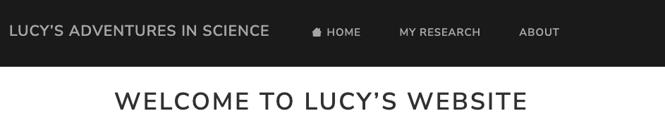

Quarto website 2
Adding a new page to your site & using YAML to modify the look and configuration of our new page and the entire site
In today’s session, you will add a new page to the website that you created in the first session.
Then, we will talk about the “YAML” markup mini-language that is used to configure your website, and will make some changes to the YAML header for your new page and the YAML in the _quarto.yml file with site-wide settings.
1 Adding a new page to your site
Let’s create a new page for your site. If you already have an idea for a page that you would like to add to your site, you can go with that. Otherwise, you can follow along with my example, which will be a page about research projects on a personal website.
Each page on your website has a corresponding .qmd source document. Currently, we just have two pages:
- A home page, for which
index.qmdis the source. - An “about page”, for which
about.qmdis the source.
So, to create a new page, we will create a new Quarto document — in RStudio, click File => New File => Quarto Document:
Unlike last week, make sure the “Use visual markdown editor” box is checked, and then click the “Create Empty Document” button in the bottom left.
Once the file has been created, let’s save it straight away: press Ctrl/Cmd+S. Save it in the top-level folder for your website, i.e. the same folder that contains index.qmd and about.qmd. If you’re making a page for which you have your own ideas, you can name it accordingly — otherwise, save it as research.qmd.
The newly created document will only contain a few lines, as shown in the screenshot above. This is the so-called “YAML header”.
We talked a bit about the YAML “markup language” last week, mostly in the context of the _quarto.yml file, which consists only of YAML content, unlike this .qmd file. Let’s dive a little deeper into YAML, because it’s one of the key components of your website’s source.
2 A little more about YAML
YAML (“YAML Ain’t Markup Language”, a silly joke of a name) is a simple format commonly used for configuration. In the source files for your website, there is a lot of YAML content straight away.
First, you have the _quarto.yml file that configures your website, including its navigation elements that are visible on every page of the site, like the “navbar” at the top. But there is also YAML in the headers of all .qmd files. For example, the top of our newly created research.qmd should read:
---
title: "Untitled"
---As opposed to the _quarto.yml file, this YAML header:
- Is surrounded by lines that only contain three dashes
---, that mark the beginning and the end of this YAML header. - Configures just this individual page, whereas the YAML in
_quarto.ymlspecifies site-wide configurations.
YAML consists of entries of key-value pairs: in the example above, title is the key that determines what the document’s title will be, and "Untitled" is the current value.
Valid YAML keys are limited to what has been pre-defined by others (i.e., in this case, the developers of Quarto), and the list of possible keys depends on the document type. The Quarto website has a full list of valid YAML keys for the _quarto.yml file as well as a a list for HTML pages, which is the kind of output that your .qmd files will produce when rendered.
Depending on the key, the value can be:
- A “free-form string” of text, like for a title
- Constrained to a series of possible values, like for the
themekey, which can set the overall look of a page to one of a few dozen available “themes” - An on/off switch using
true/false, like whether to show a Table of Contents using thetockey.
2.1 YAML’s structure
YAML’s structure is quite simple, but it does have a few rules. Each entry is generally on its own line. It has a hierarchical structure in that many values can itself be given key-value pairs to specify additional options. For example, see this section from your _quarto.yml file:
format:
html:
theme: cosmo
css: styles.css
toc: trueNote how the values for keys that simply take a value (above:
theme,css, andtoc) and have no “child keys” are on the same line as the key.In contrast, keys whose values are really “child keys” (above:
formatandhtml):Are followed by a colon
:Are on a line by themselves
Have their child keys on the next line(s), indented one more level.
Indentation in YAML has to use either two or four spaces (no tabs!) per indentation level, and YAML is sensitive to indentation errors. (Note that RStudio will by default insert multiple spaces instead of a true tab when you press the Tab key, so you can still use that just fine.)
This format => html section in the _quarto.yml file will set defaults for the formatting of individual pages on your website. You can use the same keys (e.g. theme, css, and toc shown above) in the YAML header of your qmd files, which would override these site-wide settings.
A final component of YAML syntax, with lists of entries, is used in the website section of _quarto.yml:
website:
title: "Lucy's adventures in science"
navbar:
left:
- href: index.qmd
text: Home
- about.qmdHere, each entry (= each page on your website) is preceded by a dash -, and:
The top entry, for the homepage, has an
hrefkey pointing to the relevant file, as well as atextkey (note: same indentation level, no additional dash) that will set what text is being displayed for this link.The bottom entry uses an alternative specification method, with just a pointer to the file. When you do this, the displayed test on the website would be the same as the file name without the
.qmdextension, namely “About”.
If you made a mistake in the YAML, you will see an ominous-looking box like this pop up:
3 Modifying the YAML header of our new page
Let’s start by changing the page’s title to title: "My Research".
Then, we can add a few new YAML entries to further populate the “title block” (top part) of your page:
subtitle: "These are my ongoing and past research projects"date: 2023-09-11author: "Lucy T. Hedgehog", or for multiple authors, use the following syntax:author: - Lucy T. Hedgehog - Lucy T. Hedgehog's advisor
- Note that when you type a new entry in the YAML header, RStudio will have an auto-completion feature with information boxes:
- In the examples above, we have double-quoted (“…”) free-form YAML values like
title. This is optional: as long as your title doesn’t contain any special characters, it would also work without quotes.
Here are a few of the many other possible HTML page YAML keys that are particularly useful:
date-modified: If you wrote a page originally on a certain date, but made some modifications afterwards, you can get a separate date entry for the modifications. Useful for e.g. blog posts and reports.title-block-banner: true: Put the title block (title and subtitle) in a “banner” by adding a background color.number-sections: true: Number sections (as determined using headers and their levels) hierarchically.toc-location: Where the Table of Contents should show up — one ofleft,right(default), orbody
4 Exercises I
Experiment with YAML header options
On your new page:
Try adding the
title-block-bannerand see if you like that kind of format.Add a few headers of different levels (start with “Header 2”, the title is basically the one level 1 header) — you can do so by clicking the dropdown menu that will say Normal:

Try turning on
number-sectionsand play around with thetoc-location(Your_quarto.ymlhas an entrytoc: true, so a table of contents will by default be shown on very page).
5 Modifying the _quarto.yml file
As mentioned above, the _quarto.yml file solely consists of YAML configurations, and these settings apply to the entire website.
The two most important “sections” in this file are:
website, where we can control things like the site’s navigation elements that will show up on every pageformat=>html, where we can specify page-level formatting settings. Here, we can use the same YAML keys that we could use in the YAML header of our new page (and any other page), except that the settings will be applied across all pages on the site.
5.1 The website section
In my example, this section currently reads as follows – yours should be the same except for the title unless you did some customization yourself already:
website:
title: "Lucy's adventures in science"
navbar:
left:
- href: index.qmd
text: Home
- about.qmdThe navbar key represents a navigation bar that is always shown across the top of the site, which should be a good default for most websites. But if you want a website navigation bar on the side, or combined top and side navigation (the latter is useful for sites with a lot of contents, and is used for example on Quarto’s own documentation website), this is possible: see Quarto’s Website Navigation docs.
Any entries under the left key will be left-aligned on the navbar, i.e. consecutive entries start on the left-hand side of the navbar, moving rightward with every added entry. We could also add right-aligned entries with a right key (see the exercise below).
If the width of your viewing window is narrow (like it often is in RStudio’s “Viewer”, as well as on phones), the navbar will be automatically collapsed into a “Hamburger menu:”
If we want our new page to show up in the navbar, we’ll have to add it as a new entry:
website:
title: "Lucy's adventures in science"
navbar:
left:
- href: index.qmd
text: Home
- about.qmd
- href: research.qmd
text: My ResearchSome other useful keys for the website section include (see this Quarto docs page for a full list):
back-to-top-navigation(a child key ofwebsite): When set totrue, this will show a “Back to top” button once you reach the bottom of a page.favicon(a child key ofwebsite): A favicon is an icon or small image that shows up in your browser next to the name of the website, see the icons shown in screenshot:
icon(a navbar entry likehrefandtext): This will allow you to show an icon instead of (default for external links) or in addition to text (default for internal links) for a link in your navbar. See here for a list of available icons. For example:
navbar:
left:
- href: index.qmd
text: Home
icon: house5.2 The html format section
Here is what the format section of your _quarto.yaml should look like:
format:
html:
theme: cosmo
css: styles.css
toc: trueAs mentioned before, the configuration done in this section can use the same keys as those in the YAML header for individual pages, but the settings done in _quarto.yaml will apply across the entire website.
For now, we’ll only talk about one key: theme. This will change the overall look of your website to a number of preset themes, each with different fonts and colors. While you can also completely customize your website’s look yourself, using one of these themes should work well for most of us.
You can see a visual list of available themes at https://bootswatch.com/. The default theme is cosmo, as you can see above. As an example, if we change Lucie’s website theme to lux:

6 Exercises II
Site-wide configuration
Modify your _quarto.yml to configure your website. You can play around with whatever you prefer, but here are some suggestions:
Try several different themes and pick one for your website.
Move the navbar entry for the
about.qmdpage to the right-hand side.Add one more icons to the Navbar, for example:
- Add a link to your Twitter account and use the
twittericon - If you have one, add a link to your GitHub account and use the
githubicon - Add e.g. a question mark icon to your About page link (search for one here).
- Take a look at the visual list of possible icons and see if there are some that you’d like to use.
- Add a link to your Twitter account and use the
Add a favicon for your
website.
The visual editor should give you some easy-to-use, Word-processor like options to format the content on your website, add images, and so on — feel free to add some more content to your website!
If you’re wondering how certain elements or configuration of the Code Club website was done, feel free to look at source code for the Code Club website, which is at: https://github.com/osu-codeclub/osu-codeclub.github.io.